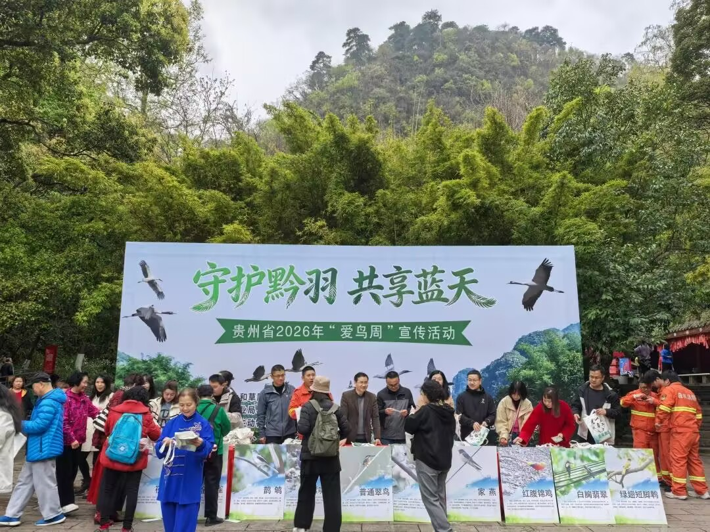
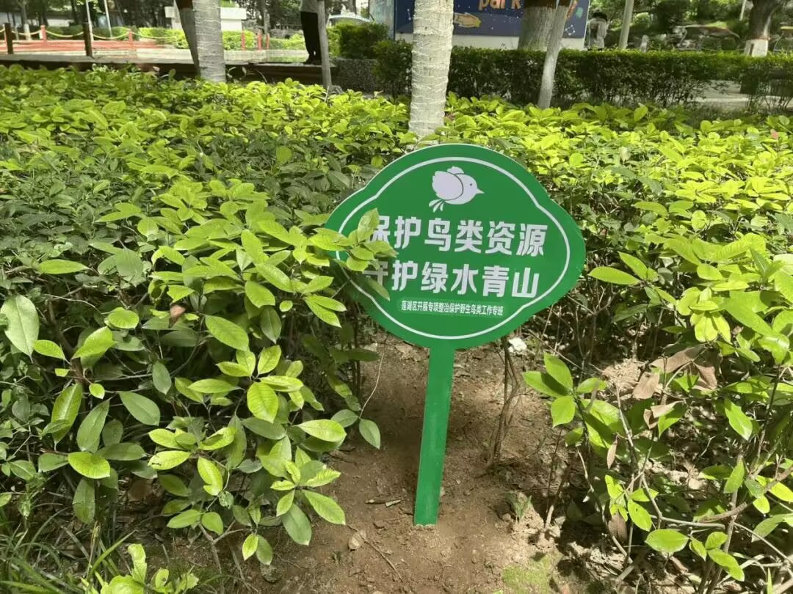

羽翼守望者


非法鸟类贸易是全球第三大非法野生动物贸易，每年涉及数百万只野生鸟类。中国的《野生动物保护法》明确禁止猎捕、交易、运输、食用国家重点保护野生动物。然而，许多农民和民众仍缺乏相关法律知识，无意中触犯法律。
普法教育应深入基层，利用电视、网络、手机App等多种渠道，以案释法，提升公众的守法意识。同时，要宣传鸟类对农业的好处，如控虫、传粉等，使群众从“反对”转向“支持”。

在学校开展自然保护法治课程，培养青少年的生态法律素养，是长远之策。许多国家已将环境法治教育纳入中小学必修内容。
此外，法院对破坏野生动物资源案件的公开审判，也具有强大的教育震慑作用。2023年，全国法院审结涉野生动物犯罪案件数千件，有效遏制了违法犯罪势头。
数字化普法手段日益重要，如“中国野生动物保护法”小程序、抖音普法短视频等，触达数亿用户。通过生动案例和互动问答，可显著提高公众对法律条款的认知度。
📖 参考文献：点此处 查看《中华人民共和国野生动物保护法》全文。